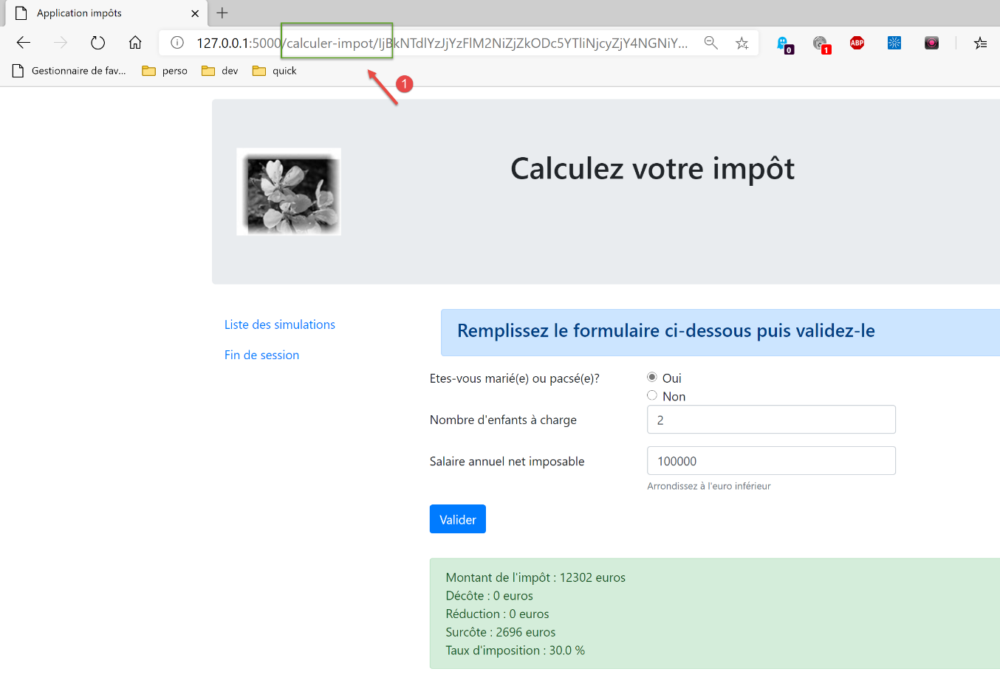
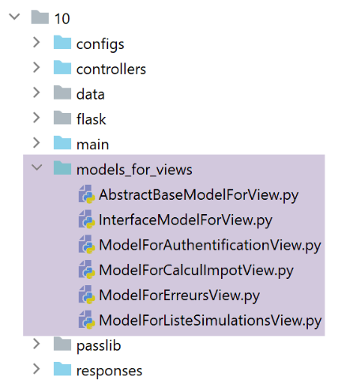

35. Ejercicio práctico: versión 15
35.1. Introducción
Esta versión tiene como objetivo resolver problemas relacionados con la actualización de las páginas de la aplicación en el navegador (F5). Veamos un ejemplo. El usuario acaba de eliminar la simulación con id=3:

Tras la eliminación, el URL en el navegador pasa a ser [/supprimer-simulation/3/…]. Si el usuario actualiza la página (F5), se vuelve a reproducir URL [1]. Por lo tanto, se solicita nuevamente la eliminación de la simulación con id=3. El resultado es entonces el siguiente:

He aquí otro ejemplo. El usuario acaba de calcular un impuesto:
- en [1], el URL y el [/calculer-impot] que acaban de consultarse con un POST;
Si el usuario actualiza la página (F5), recibe un mensaje de advertencia:

La operación de actualización de la página vuelve a ejecutar la última solicitud realizada por el navegador, en este caso un [POST /calculer-impot]. Cuando se solicita volver a ejecutar un POST, los navegadores emiten una advertencia similar a la anterior. Esta advierte que se está volviendo a ejecutar una acción ya realizada. Supongamos que este POST haya realizado una compra; sería desafortunado volver a realizarla.
Además, vamos a limitar la posibilidad de que el usuario escriba URL en su navegador. Tomemos como ejemplo una de las vistas anteriores:

Los enlaces que ofrece esta página son:
- [Liste des simulations] asociado a URL y [/lister-simulations];
- [Fin de session] asociado a URL y [/fin-session];
- [Valider] asociado a URL (no aparece arriba) [/calculer-impot];
Cuando se muestre la vista del cálculo del impuesto, solo aceptaremos las acciones [/lister-simulations, /fin-session, /calculer-impot]. Si el usuario ingresa otra acción en su navegador, se generará un error. Realizaremos este tipo de verificación para las cuatro vistas de la aplicación.
Proponemos resolver el problema de la actualización de las páginas de la siguiente manera:
- distinguiremos dos tipos de acciones:
- las acciones ADS (Acción «Do Something») que modifican el estado de la aplicación. Las acciones ADS suelen tener parámetros en el URL o en el cuerpo de la solicitud;
- las acciones ASV (Acción Mostrar Vista) que muestran una vista sin modificar el estado de la aplicación. Habrá tantas acciones ASV como vistas V. Las acciones ASV no tienen ningún parámetro;
- las acciones ADS, hasta ahora, se ejecutaban y concluían con la visualización de una vista V después de haber preparado su modelo M. A partir de ahora, colocarán la plantilla M de la vista en la sesión y le pedirán al navegador que se redirija a la acción ASV, encargada de mostrar la vista V;
- las vistas V solo se mostrarán al finalizar una acción ASV. Tomarán su modelo de la sesión;
La ventaja de este método es que el navegador mostrará URL ASV en su barra de direcciones. Al actualizar la página, se volverá a ejecutar la acción ASV. Esta acción no modifica el estado de la aplicación y utiliza una plantilla de sesión. Por lo tanto, se volverá a mostrar la misma página sin efectos secundarios. Finalmente, debido a las redirecciones, el usuario solo verá acciones URL de ASV en su navegador y tendrá la impresión de navegar de una página a otra;
35.2. Implementación

La carpeta [impots/http-servers/10] se obtiene inicialmente al copiar la carpeta [impots/http-servers/09]. Luego se modifica.
35.2.1. Las nuevas rutas

En los dos archivos [routes_with_csrftoken] y [routes_without_csrftoken], debemos crear las cuatro rutas de las cuatro acciones ASV que muestran las cuatro vistas. Las demás rutas permanecen sin cambios.
En [routes_with_csrftoken]:
# mostrar-vista-cálculo-impuestos
@app.route('/afficher-vue-calcul-impot/<string:csrf_token>', methods=['GET'])
def afficher_vue_calcul_impot(csrf_token: str) -> tuple:
# se ejecuta el controlador asociado a la acción
return front_controller()
# mostrar-vista-autenticación
@app.route('/afficher-vue-authentification/<string:csrf_token>', methods=['GET'])
def afficher_vue_authentification(csrf_token: str) -> tuple:
# se ejecuta el controlador asociado a la acción
return front_controller()
# mostrar-vista-lista-simulaciones
@app.route('/afficher-vue-liste-simulations/<string:csrf_token>', methods=['GET'])
def afficher_vue_liste_simulations(csrf_token: str) -> tuple:
# se ejecuta el controlador asociado a la acción
return front_controller()
# mostrar-vista-lista_errores
@app.route('/afficher-vue-liste-erreurs/<string:csrf_token>', methods=['GET'])
def afficher_vue_liste_erreurs(csrf_token: str) -> tuple:
# se ejecuta el controlador asociado a la acción
return front_controller()
En las líneas 1 a 23, hemos creado cuatro rutas para las cuatro acciones ASV:
- [/afficher-vue-authentification], línea 8, muestra la vista de autenticación;
- [/afficher-vue-calcul-impot], línea 2, muestra la vista de cálculo de impuestos;
- [/afficher-vue-liste-simulations], línea 14, muestra la vista de simulaciones;
- [/afficher-vue-liste-erreurs], línea 20, muestra la vista de errores inesperados;
Se hace lo mismo en el archivo [routes_with_csrftoken] de las rutas sin token:
# rutas ASV -------------------------
# mostrar-vista-cálculo-impuestos
@app.route('/afficher-vue-calcul-impot', methods=['GET'])
def afficher_vue_calcul_impot() -> tuple:
# se ejecuta el controlador asociado a la acción
return front_controller()
# mostrar-vista-autenticación
@app.route('/afficher-vue-authentification', methods=['GET'])
def afficher_vue_authentification() -> tuple:
# se ejecuta el controlador asociado a la acción
return front_controller()
# mostrar-vista-lista-simulaciones
@app.route('/afficher-vue-liste-simulations', methods=['GET'])
def afficher_vue_liste_simulations() -> tuple:
# se ejecuta el controlador asociado a la acción
return front_controller()
# mostrar-vista-lista_errores
@app.route('/afficher-vue-liste-erreurs', methods=['GET'])
def afficher_vue_liste_erreurs() -> tuple:
# se ejecuta el controlador asociado a la acción
return front_controller()
35.2.2. Los nuevos controladores

El controlador [AfficherVueAuthentificationController] ejecuta la acción ASV [/afficher-vue-authentification]:
from flask_api import status
from werkzeug.local import LocalProxy
from InterfaceController import InterfaceController
class AfficherVueAuthentificationController(InterfaceController):
def execute(self, request: LocalProxy, session: LocalProxy, config: dict) -> (dict, int):
# se recuperan los elementos de la ruta
params = request.path.split('/')
action = params[1]
# cambio de vista: solo hay que establecer un código de estado
return {"action": action, "état": 1100, "réponse": ""}, status.HTTP_200_OK
Se ha mencionado que las acciones ASV no tienen parámetros y no modifican el estado de la aplicación. Simplemente se muestra la vista deseada al establecer, en la línea 14, un código de estado.
El controlador [AfficherVueCalculImpotController] ejecuta la acción ASV [/afficher-vue-calcul-impot]:
from flask_api import status
from werkzeug.local import LocalProxy
from InterfaceController import InterfaceController
class AfficherVueCalculImpotController(InterfaceController):
def execute(self, request: LocalProxy, session: LocalProxy, config: dict) -> (dict, int):
# se recuperan los elementos de la ruta
params = request.path.split('/')
action = params[1]
# cambio de vista: solo hay que establecer un código de estado
return {"action": action, "état": 1400, "réponse": ""}, status.HTTP_200_OK
El controlador [AfficherVueListeSimulationsController] ejecuta la acción ASV [/afficher-vue-liste-simulations]:
from flask_api import status
from werkzeug.local import LocalProxy
from InterfaceController import InterfaceController
class AfficherVueListeSimulationsController(InterfaceController):
def execute(self, request: LocalProxy, session: LocalProxy, config: dict) -> (dict, int):
# se recuperan los elementos de la ruta
params = request.path.split('/')
action = params[1]
# cambio de vista: solo hay que establecer un código de estado
return {"action": action, "état": 1200, "réponse": ""}, status.HTTP_200_OK
El controlador [AfficherVueListeErreursController] ejecuta la acción ASV [/afficher-vue-liste-erreurs]:
from flask_api import status
from werkzeug.local import LocalProxy
from InterfaceController import InterfaceController
class AfficherVueListeErreursController(InterfaceController):
def execute(self, request: LocalProxy, session: LocalProxy, config: dict) -> (dict, int):
# se recuperan los elementos de la ruta
params = request.path.split('/')
action = params[1]
# cambio de vista: solo hay que establecer un código de estado
return {"action": action, "état": 1300, "réponse": ""}, status.HTTP_200_OK
Resumamos los códigos de estado:
- el código 1100 debe mostrar la vista de autenticación;
- el código 1400 debe mostrar la vista de cálculo del impuesto;
- el código 1200 debe mostrar la vista de simulaciones;
- el código 1300 debe mostrar la vista de errores inesperados;
35.2.3. La nueva configuración MVC

Debido a que se había vuelto demasiado grande, la configuración MVC se dividió en cuatro archivos:
- [controllers]: la lista de controladores C de la aplicación MVC;
- [ads_actions]: enumera las acciones de ADS (Acción «Do Something»);
- [asv_actions]: lista de las acciones de ASV (Acción «Mostrar vista»);
- [responses]: enumera las clases de las respuestas HTTP de la aplicación;
Comencemos por lo más sencillo, el archivo de respuestas HTTP [responses]:
def configure(config: dict) -> dict:
# Configuración de la aplicación MVC
# las respuestas HTTP
from HtmlResponse import HtmlResponse
from JsonResponse import JsonResponse
from XmlResponse import XmlResponse
# los diferentes tipos de respuesta (json, xml, html)
responses = {
"json": JsonResponse(),
"html": HtmlResponse(),
"xml": XmlResponse()
}
# se genera el diccionario de respuestas HTTP
return {
# respuestas HTTP
"responses": responses,
}
No es ninguna sorpresa.
El archivo [controllers] de los controladores tampoco presenta sorpresas. Simplemente se han agregado los nuevos controladores de las acciones ASV.
def configure(config: dict) -> dict:
# configuración de la aplicación MVC
# el controlador principal
from MainController import MainController
# los controladores de acciones ADS
from AuthentifierUtilisateurController import AuthentifierUtilisateurController
from CalculerImpotController import CalculerImpotController
from CalculerImpotsController import CalculerImpotsController
from FinSessionController import FinSessionController
from GetAdminDataController import GetAdminDataController
from InitSessionController import InitSessionController
from ListerSimulationsController import ListerSimulationsController
from SupprimerSimulationController import SupprimerSimulationController
from AfficherCalculImpotController import AfficherCalculImpotController
# los controladores de acciones ASV
from AfficherVueCalculImpotController import AfficherVueCalculImpotController
from AfficherVueAuthentificationController import AfficherVueAuthentificationController
from AfficherVueListeErreursController import AfficherVueListeErreursController
from AfficherVueListeSimulationsController import AfficherVueListeSimulationsController
# acciones autorizadas y sus controladores
controllers = {
# inicialización de una sesión de cálculo
"init-session": InitSessionController(),
# autenticación de un usuario
"authentifier-utilisateur": AuthentifierUtilisateurController(),
# enlace a la vista de cálculo de impuestos
"afficher-calcul-impot": AfficherCalculImpotController(),
# cálculo del impuesto en modo individual
"calculer-impot": CalculerImpotController(),
# cálculo del impuesto en modo por lotes
"calculer-impots": CalculerImpotsController(),
# lista de simulaciones
"lister-simulations": ListerSimulationsController(),
# eliminación de una simulación
"supprimer-simulation": SupprimerSimulationController(),
# fin de la sesión de cálculo
"fin-session": FinSessionController(),
# obtención de datos de la administración tributaria
"get-admindata": GetAdminDataController(),
# controlador principal
"main-controller": MainController(),
# visualización de la vista de autenticación
"afficher-vue-authentification": AfficherVueAuthentificationController(),
# Visualización de la vista de cálculo del impuesto
"afficher-vue-calcul-impot": AfficherVueCalculImpotController(),
# visualización de la vista de simulaciones
"afficher-vue-liste-simulations": AfficherVueListeSimulationsController(),
# visualización de la vista de errores
"afficher-vue-liste-erreurs": AfficherVueListeErreursController()
}
# se muestra la configuración de los controladores
return {
# controladores
"controllers": controllers,
}
La configuración [asv_actions] de las acciones ASV es la siguiente:
def configure(config: dict) -> dict:
# Configuración de la aplicación MVC
# las vistas HTML y sus plantillas dependen del estado devuelto por el controlador
# acciones ASV (Acción Mostrar vista)
asv = [
{
# vista de autenticación
"états": [
1100, # /mostrar-vista-de-autenticación
],
"view_name": "views/vue-authentification.html",
},
{
# vista de cálculo de impuestos
"états": [
1400, # /mostrar-vista-cálculo-impuesto
],
"view_name": "views/vue-calcul-impot.html",
},
{
# vista de la lista de simulaciones
"états": [
1200, # /mostrar-vista-lista-simulaciones
],
"view_name": "views/vue-liste-simulations.html",
},
{
# vista de la lista de errores
"états": [
1300, # /mostrar-vista-lista-de-errores
],
"view_name": "views/vue-erreurs.html",
},
]
# se genera la configuración ASV
return {
# vistas y plantillas
"asv": asv,
}
- El archivo [asv_actions] reúne las cuatro nuevas acciones, cuyo funcionamiento recordamos a continuación:
- no tienen ningún parámetro;
- muestran una vista específica cuyo modelo está en sesión;
- la lista [asv], de las líneas 6 a 35, asocia una vista a cada acción ASV;
El archivo [ads_actions] reúne las acciones ADS:
def configure(config: dict) -> dict:
# configuración de la aplicación MVC
# las plantillas de las vistas
from ModelForAuthentificationView import ModelForAuthentificationView
from ModelForCalculImpotView import ModelForCalculImpotView
from ModelForErreursView import ModelForErreursView
from ModelForListeSimulationsView import ModelForListeSimulationsView
# acciones ADS (Acción «Hacer algo»)
ads = [
{
"états": [
400, # /fin de sesión exitosa
],
# redirección a la acción ADS
"to": "/init-session/html",
},
{
"états": [
700, # /iniciar-sesión - éxito
201, # /autenticar-usuario - falló
],
# redirección a la acción ASV
"to": "/afficher-vue-authentification",
# plantilla de la siguiente vista
"model_for_view": ModelForAuthentificationView()
},
{
"états": [
200, # /autenticar-usuario exitoso
300, # /calcular-impuesto exitoso
301, # /calcular-impuesto error
800, # /mostrar-cálculo-de-impuestos enlace
],
# redirección a la acción ASV
"to": "/afficher-vue-calcul-impot",
# plantilla de la siguiente vista
"model_for_view": ModelForCalculImpotView()
},
{
"états": [
500, # /listar-simulaciones (éxito)
600, # /eliminar-simulación (correcto)
],
# redirección a la acción ASV
"to": "/afficher-vue-liste-simulations",
# plantilla de la siguiente vista
"model_for_view": ModelForListeSimulationsView()
},
]
# vista de errores inesperados
view_erreurs = {
# redirección a la acción ASV
"to": "/afficher-vue-liste-erreurs",
# plantilla de la siguiente vista
"model_for_view": ModelForErreursView()
}
# se aplica la configuración MVC
return {
# acciones ADS
"ads": ads,
# vista de errores inesperados
"view_erreurs": view_erreurs,
}
- líneas 11-51: la lista de acciones ADS (Acción «Do Something»). Se incluyen todas las acciones de las versiones anteriores. Sin embargo, su funcionamiento ha cambiado:
- no muestran una vista V. Solo preparan el modelo M de esa vista V;
- solicitan que se muestre la vista V mediante una redirección a la acción ASV asociada a la vista V;
- no todas las acciones ADS conducen a una redirección hacia una acción ASV: líneas 12-18, la acción ADS [/fin-session] conduce a una redirección hacia la acción ADS [/init-session/html]. Para distinguir las redirecciones ADS -> ADS y ADS -> ASV, se puede utilizar el modelo [model_for_view]. Este no existe para las redirecciones ADS -> ADS;
El archivo [main/config], que reúne todas las configuraciones, cambia de la siguiente manera:
def configure(config: dict) -> dict:
# configuración de syspath
import syspath
config['syspath'] = syspath.configure(config)
# Configuración de la aplicación
import parameters
config['parameters'] = parameters.configure(config)
# Configuración de la base de datos
import database
config["database"] = database.configure(config)
# instanciación de las capas de la aplicación
import layers
config['layers'] = layers.configure(config)
# configuración de la capa MVC
config['mvc'] = {}
# Configuración de los controladores de la capa [web]
import controllers
config['mvc'].update(controllers.configure(config))
# acciones ASV (Acción Mostrar vista)
import asv_actions
config['mvc'].update(asv_actions.configure(config))
# acciones ADS (Acción «Do Something»)
import ads_actions
config['mvc'].update(ads_actions.configure(config))
# configuración de respuestas HTTP
import responses
config['mvc'].update(responses.configure(config))
# se devuelve la configuración
return config
35.2.4. Las nuevas plantillas

Las plantillas generarán nueva información. Tomemos, por ejemplo, la plantilla de la vista de autenticación:
from flask import Request
from werkzeug.local import LocalProxy
from AbstractBaseModelForView import AbstractBaseModelForView
class ModelForAuthentificationView(AbstractBaseModelForView):
def get_model_for_view(self, request: Request, session: LocalProxy, config: dict, résultat: dict) -> dict:
# encapsulamos los datos de la página en la plantilla
modèle = {}
…
# token CSRF
modèle['csrf_token'] = super().get_csrftoken(config)
# acciones posibles desde la vista
modèle['actions_possibles'] = ["afficher-vue-authentification", "authentifier-utilisateur"]
# se devuelve la plantilla
return modèle
- La novedad está en la línea 17: cada modelo generará una lista de acciones posibles cuando se muestre la vista V, de la cual es el modelo M. Para conocer estas acciones, hay que volver a la vista V. En el caso de la vista de autenticación:

- se observa que la vista de autenticación solo ofrece una acción, la del botón [Valider]. Esta acción es [/authentifier-utilisateur];
Se escribió:
# acciones posibles desde la vista
modèle['actions_possibles'] = ["afficher-vue-authentification", "authentifier-utilisateur"]
En la vista anterior, se observa que si el usuario actualiza la vista, la acción [1] [/afficher-vue-authentification] se volverá a ejecutar. Por lo tanto, debe estar autorizada. Se podría haber optado por no autorizarla, en cuyo caso el usuario habría recibido un error cada vez que recargara la página. Se consideró que esto no era deseable.
Las acciones posibles se colocan en el modelo de la vista. Sabemos que este modelo se guardará en la sesión.
Hacemos esto para cada una de las cuatro vistas. Las acciones posibles son entonces las siguientes:
Vista de autenticación
modèle['actions_possibles'] = ["afficher-vue-authentification", "authentifier-utilisateur"]
Vista de cálculo del impuesto
# acciones posibles desde la vista
modèle['actions_possibles'] = ["afficher-vue-calcul-impot", "calculer-impot", "lister-simulations","fin-session"]
Vista de la lista de simulaciones
# acciones posibles desde la vista
actions_possibles = ["afficher-vue-liste-simulations", "afficher-calcul-impot", "fin-session"]
if len(modèle['simulations']) != 0:
actions_possibles.append("supprimer-simulation")
modèle['actions_possibles'] = actions_possibles
Vista de la lista de errores
# acciones posibles desde la vista
modèle['actions_possibles'] = ["afficher-vue-liste-erreurs", "afficher-calcul-impot", "lister-simulations", "fin-session"]
35.2.5. El nuevo controlador principal

El controlador [MainController] sufre algunas modificaciones:
# importación de dependencias
import threading
import time
from random import randint
from flask_api import status
from flask_wtf.csrf import generate_csrf, validate_csrf
from werkzeug.local import LocalProxy
from wtforms import ValidationError
from InterfaceController import InterfaceController
from Logger import Logger
from SendAdminMail import SendAdminMail
def send_adminmail(config: dict, message: str):
# se envía un correo electrónico al administrador de la aplicación
config_mail = config['parameters']['adminMail']
config_mail["logger"] = config['logger']
SendAdminMail.send(config_mail, message)
# controlador principal de la aplicación
class MainController(InterfaceController):
def execute(self, request: LocalProxy, session: LocalProxy, config: dict) -> (dict, int):
# se procesa la solicitud
type_response1 = None
logger = None
try:
# se recuperan los elementos de la ruta
params = request.path.split('/')
# la acción es el primer elemento
action = params[1]
# registrar en el log
logger = Logger(config['parameters']['logsFilename'])
…
# la acción /mostrar-vista-lista-errores es especial
# no se realiza ninguna verificación; de lo contrario, se corre el riesgo de entrar en un bucle infinito de redirecciones
erreur = False
if action != "afficher-vue-liste-erreurs":
# si hay un error, [resultado] es el resultado que se debe enviar al cliente
(erreur, résultat, type_response1) = MainController.check_action(params, session, config)
# si no hay error, se ejecuta la acción
if not erreur:
# se ejecuta el controlador asociado a la acción
controller = config['mvc']['controllers'][action]
résultat, status_code = controller.execute(request, session, config)
except BaseException as exception:
# excepciones (inesperadas)
résultat = {"action": action, "état": 131, "réponse": [f"{exception}"]}
erreur = True
finally:
pass
# error de ejecución
if erreur:
# solicitud incorrecta
status_code = status.HTTP_400_BAD_REQUEST
if config['parameters']['with_csrftoken']:
# se agrega el csrf_token al resultado
résultat['csrf_token'] = generate_csrf()
….
# se envía la respuesta HTTP
return response, status_code
@staticmethod
def check_action(params: list, session: LocalProxy, config: dict) -> (bool, dict, str):
…
# resultado del método
return erreur, résultat, type_response1
- líneas 39-44: se realizan las primeras verificaciones sobre la acción. Volveremos a esto más adelante. El método estático [MainController.check_action] devuelve una tupla de tres elementos:
- [erreur]: True si se ha detectado un error, False en caso contrario;
- [résultat]: un resultado de error si (error == True), None en caso contrario;
- [type_response1]: el tipo (json, xml, html, None) de la sesión, tipo encontrado en la sesión;
- línea 39: no se realiza ninguna verificación si la acción es la acción ASV [afficher-vue-liste-erreurs], que mostrará la lista de errores. De hecho, si se encontrara un error durante esta acción, se nos redirigiría nuevamente a la acción [/afficher-vue-liste-erreurs] y entraríamos en un bucle infinito de redirecciones;
- El método estático [check_action] es el siguiente:
@staticmethod
def check_action(params: list, session: LocalProxy, config: dict) -> (bool, dict, str):
# se recupera la acción en curso
action = params[1]
# sin errores ni resultados al inicio
erreur = False
résultat = None
# se debe conocer el tipo de sesión antes de realizar ciertas acciones ADS
type_response1 = session.get('typeResponse')
if type_response1 is None and action != "init-session":
# se observa el error
résultat = {"action": action, "état": 101,
"réponse": ["pas de session en cours. Commencer par action [init-session]"]}
erreur = True
# Para ciertas acciones ADS, se debe estar autenticado
user = session.get('user')
if user is None and action not in ["init-session",
"authentifier-utilisateur",
"afficher-vue-authentification"]:
# se observa el error
résultat = {"action": action, "état": 101,
"réponse": [f"action [{action}] demandée par utilisateur non authentifié"]}
erreur = True
# desde una vista solo se pueden realizar ciertas acciones
if not erreur and action != "init-session":
# Por el momento no hay acciones disponibles
actions_possibles = None
# se recupera el modelo de la futura vista en la sesión, si existe
modèle = session.get('modèle')
# si se ha encontrado una plantilla, se recuperan sus acciones posibles
if modèle:
actions_possibles = modèle.get('actions_possibles')
# si se tiene una lista de acciones posibles, se verifica que la acción actual forme parte de ella
if actions_possibles and action not in actions_possibles:
# se registra el error
résultat = {"action": action, "état": 151,
"réponse": [f"action [{action}] incorrecte dans l'environnement actuel"]}
erreur = True
# ¿Error?
if not erreur and config['parameters']['with_csrftoken']:
# se verifica la validez del token CSRF
# el csrf_token es el último elemento de la ruta
csrf_token = params.pop()
try:
# Se lanzará una excepción si el csrf_token no es válido
validate_csrf(csrf_token)
except ValidationError as exception:
#: token CSRF no válido
résultat = {"action": action, "état": 121, "réponse": [f"{exception}"]}
# se registra el error
erreur = True
# resultado del método
return erreur, résultat, type_response1
- línea 2: el método [check_action] realiza varias verificaciones sobre la validez de la acción en curso;
- líneas 6-26, 45-57: las versiones anteriores ya realizaban estas verificaciones;
- líneas 28-42: se agrega una nueva verificación. Se comprueba si la acción en curso es posible en el estado actual de la aplicación. Si la acción en curso no es posible, se genera un estado 151 (línea 40) que garantiza que la acción actual será redirigida a la vista de errores inesperados;
35.2.6. La nueva respuesta HTML

Los cambios actuales solo afectan a las sesiones HTML. Las sesiones jSON o XML no se ven afectadas. La clase [HtmlResponse] evoluciona de la siguiente manera:
# dependencias
from flask import make_response, redirect, render_template
from flask.wrappers import Response
from flask_api import status
from flask_wtf.csrf import generate_csrf
from werkzeug.local import LocalProxy
from InterfaceResponse import InterfaceResponse
class HtmlResponse(InterfaceResponse):
def build_http_response(self, request: LocalProxy, session: LocalProxy, config: dict, status_code: int,
résultat: dict) -> (Response, int):
# la respuesta HTML depende del código de estado devuelto por el controlador
état = résultat["état"]
# se verifica si el estado fue generado por una acción ASV
# en cuyo caso, se debe mostrar una vista
asv_configs = config['mvc']["asv"]
trouvé = False
i = 0
# se recorre la lista de vistas
nb_views = len(asv_configs)
while not trouvé and i < nb_views:
# vista n.º i
asv_config = asv_configs[i]
# informes asociados a la vista n.º i
états = asv_config["états"]
# ¿Se encuentra el informe buscado entre los informes asociados a la vista n.º i?
if état in états:
trouvé = True
else:
# siguiente vista
i += 1
# ¿Encontrado?
if trouvé:
# Se trata de una acción ASV: hay que mostrar una vista cuyo modelo ya está en la sesión
# se genera el código HTML de la respuesta
html = render_template(asv_config["view_name"], modèle=session['modèle'])
# se construye la respuesta HTTP
response = make_response(html)
response.headers['Content-Type'] = 'text/html; charset=utf-8'
# se devuelve el resultado
return response, status_code
# no se encuentra —se trata de un código de estado de una acción ADS
# a la que le seguirá una redirección
redirected = False
for ads in config['mvc']['ads']:
# estados que requieren una redirección
états = ads["états"]
if état in états:
#: hay redirección
redirected = True
break
# diccionario de redirección para el caso de errores inesperados
if not redirected:
ads = config['mvc']['view_erreurs']
# ¿Se trata de una redirección hacia una acción ASD o ASV?
# si hay una plantilla, entonces se trata de una redirección a una acción ASV
#: entonces hay que calcular la plantilla de la vista V que mostrará la acción ASV
model_for_view = ads.get("model_for_view")
if model_for_view:
# cálculo del modelo de la siguiente vista
modèle = model_for_view.get_model_for_view(request, session, config, résultat)
# La plantilla se activa para la siguiente vista
session['modèle'] = modèle
# ahora hay que generar el URL de redirección sin olvidar el token CSRF si se solicita
if config['parameters']['with_csrftoken']:
csrf_token = f"/{generate_csrf()}"
else:
csrf_token = ""
# respuesta de redirección
return redirect(f"{ads['to']}{csrf_token}"), status.HTTP_302_FOUND
- líneas 18-35: se verifica si el estado generado por la última acción ejecutada corresponde a una acción ASV;
- líneas 36-46: si es así, se muestra la vista V asociada a la acción ASV utilizando como plantilla la plantilla encontrada en la sesión asociada a la clave [‘modèle’];
- líneas 48-60: al llegar aquí, sabemos que el estado generado por la última acción ejecutada corresponde a una acción ADS. Esto provocará una redirección. Se busca en el archivo de configuración la definición de dicha redirección;
- línea 62: al llegar aquí, se cuenta con la configuración de la redirección que se debe realizar. Hay dos casos:
- se trata de una redirección a otra acción ADS. En ese caso, no hay que calcular ninguna plantilla de vista;
- se trata de una redirección hacia una acción ASV. En ese caso, sí hay que calcular una plantilla de vista (líneas 67-68). Esta plantilla se carga luego en la sesión (línea 70);
- líneas 72-76: se calcula la redirección URL;
- líneas 78-79: se envía la respuesta de redirección al cliente;
35.3. Pruebas
Realice las siguientes pruebas con un navegador:
- utilice la aplicación normalmente. Verifique que los únicos URL que muestra el navegador sean URL, ASV y [/afficher-vue-nom_de_la_vue];
- actualice las páginas (F5) y observe que se vuelve a mostrar la misma página. No hay ningún efecto secundario;
Por otro lado, utilice el cliente [impots/http-clients/09]. Dado que los cambios realizados afectan únicamente a las sesiones HTML, los clientes [main, main2, main3, Test1HttpClientDaoWithSession, Test2HttpClientDaoWithSession] deben seguir funcionando.
Ahora veamos un caso en el que la acción no es posible. Se muestra la siguiente vista:

En lugar de [1], se ingresa URL [/supprimer-simulation/1]. La acción [/supprimer-simulation] no forma parte de las acciones propuestas por la vista, que son las acciones 1 a 4. Por lo tanto, será rechazada. La respuesta del servidor es la siguiente: